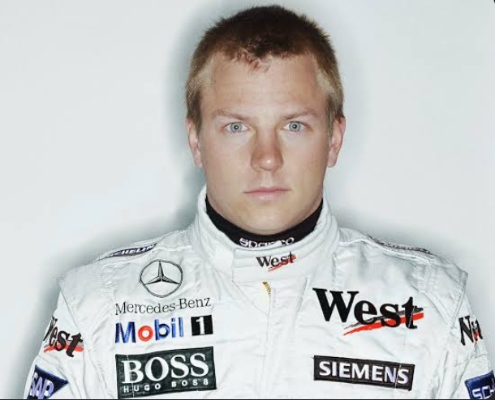

01 · A finn jégemberről lehullik a lepel
Antonelli: Egy újabb túlértékelt bohóc, avagy Demon Hill 3.0 vagy Jensen Baton 2.0?
A Sepangi futam után ideje végre kimondani azt, amit mindenki gondol, csak fél leírni.

A Sepangi futam után ideje végre kimondani azt, amit mindenki gondol, csak fél leírni.
Mickey Mouse WDCből nem lesz Michael Schumacher.